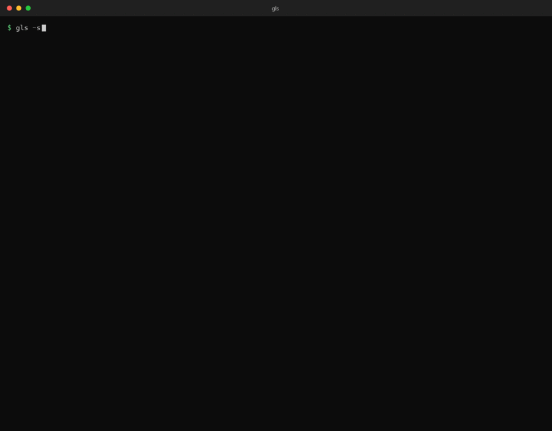
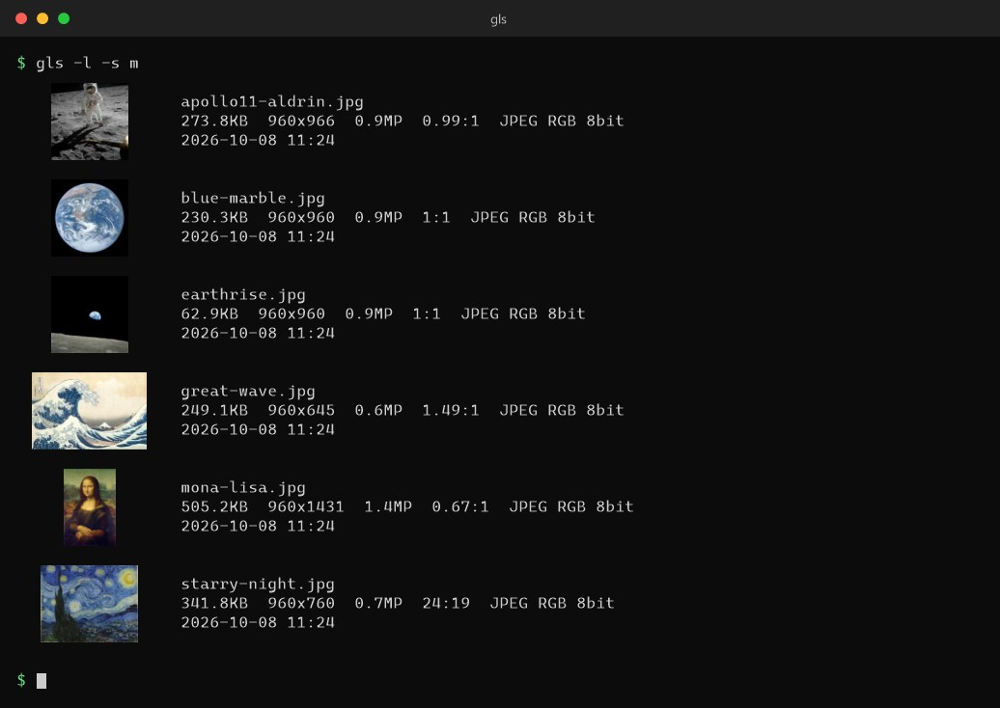

ls, with pictures.
An ls-style lister that shows thumbnails of images, videos and PDFs in your terminal. Ctrl+click a name to open the file.
画像・動画・PDF のサムネイルを表示する、ls 風のファイル一覧ツール。名前を Ctrl+クリック でファイルを開けます。

gls. This is not a screen recording, and the typing is simulated. The sample pictures are in the public domain.
どのコマも gls の実際の出力から作っています。画面の録画ではなく、入力する様子は作り物です。サンプルの画像はパブリックドメインです。
What it doesできること
The way you use ls, with pictures.ls の使い方のまま、絵が見えます。
Real images in the terminal端末の中に本物の画像
Sixel, Kitty or iTerm2 graphics. Terminals without them fall back automatically to half-block characters, then to ASCII art.Sixel・Kitty・iTerm2 のグラフィックスで表示。使えない端末では、ハーフブロック、さらにアスキーアートへ自動で切り替わります。
Many formats多くの形式
PNG, JPEG, GIF, WebP, TIFF, BMP, SVG, video, PDF and HEIC.PNG・JPEG・GIF・WebP・TIFF・BMP・SVG・動画・PDF・HEIC に対応。
Clickable file namesクリックできるファイル名
Names are terminal hyperlinks. Ctrl+click (Cmd+click on macOS) opens the file in your default app.名前は端末のリンクです。Ctrl+クリック（macOS は Cmd+クリック）で、既定のアプリで開きます。
Made for the ls workflowls の使い方に合わせて
Regex filter, sort by name, date or EXIF time, recursion, -vv details, and -l: one card per file with the thumbnail and its EXIF.正規表現での絞り込み、名前・日付・EXIF の時刻での並び替え、再帰、-vv の詳細表示、-l（サムネイルと EXIF つきのカード）。
Scriptableスクリプトから使える
--json for structured output and -0 for xargs -0. When piped, -l prints a plain one-line-per-file table.構造化した出力の --json、xargs -0 向けの -0。パイプのときは、-l は1ファイル1行の表になります。
Fast, and everywhere速く、どこでも
Parallel decoding, read-ahead and a thumbnail cache. Windows, macOS and Linux (including WSL), with messages in 10 languages.並列デコード、先読み、サムネイルのキャッシュ。Windows・macOS・Linux（WSL を含む）で動き、メッセージは10言語です。

gls, but the pointer, the tooltip and the viewer window are drawn. What really opens is the app your OS uses for that file type.
Ctrl+クリックでファイルが開きます。これはイメージ図（作り物）で、画面の録画ではありません。一覧は gls の実際の出力ですが、ポインタ、ツールチップ、ビューワーは描いたものです。実際に開くのは、その種類のファイルに OS が割り当てているアプリです。

gls -l: a card per file, with the thumbnail on the left. Rendered from the real output of gls.
gls -l: 1ファイル1枚のカード。左にサムネイルが付きます。gls の実際の出力から作った画像です。
Installインストール
Download a prebuilt binary (no Rust needed), or build it with cargo.ビルド済みのバイナリをダウンロードする（Rust は不要）か、cargo でビルドします。
macOS / Linux
VERSION=0.1.1 TARGET=aarch64-apple-darwin # other targets: x86_64-apple-darwin, x86_64-unknown-linux-gnu, aarch64-unknown-linux-gnu curl -L -O "https://github.com/equinox79/gls/releases/download/v$VERSION/gls-v$VERSION-$TARGET.tar.gz" tar xzf "gls-v$VERSION-$TARGET.tar.gz" mkdir -p ~/.local/bin && cp "gls-v$VERSION-$TARGET/gls" ~/.local/bin/
Then put ~/.local/bin on your PATH. The steps for bash and zsh are in the README.そのあと、~/.local/bin を PATH に通します。bash と zsh の手順は README にあります。
Windows (PowerShell)
$v = "0.1.1" $t = "x86_64-pc-windows-msvc" Invoke-WebRequest "https://github.com/equinox79/gls/releases/download/v$v/gls-v$v-$t.zip" -OutFile gls.zip Expand-Archive gls.zip -DestinationPath .
Then copy gls.exe to a folder on your PATH. The README has a PowerShell recipe for that.そのあと、gls.exe を PATH の通ったフォルダにコピーします。README に、PowerShell での手順があります。
With RustRust を使う場合
cargo install --git https://github.com/equinox79/gls
The version in these commands is an example: the newest one is on the Releases page, with a checksum file.コマンドのバージョンは例です。最新のバージョンとチェックサムは、Releases のページにあります。
Video, PDF and HEIC thumbnails may need a few extra tools on some systems (for example ffmpeg on Linux). The README lists what each OS needs, with install commands. The macOS binaries are not signed.動画・PDF・HEIC のサムネイルには、環境によって追加のツール（たとえば Linux の ffmpeg）が要ります。必要なものとインストールのコマンドは、OS ごとに README にあります。macOS のバイナリは署名していません。
Usage使い方
gls # thumbnails of the current directory gls photo.jpg # show one image gls photos/ -s m # bigger thumbnails gls . -R -e '\.png$' --sort date -n 20 # PNGs in subfolders, newest 20 gls ./* -vv # format, EXIF and more under each name gls -l # one card per file: thumbnail, name, size, dates, EXIF gls -l --thumbs-off # the same details as a plain table gls --json -R photos | jq '.[].name' # structured output for scripts gls -0 -R -e '\.jpg$' | xargs -0 ls -l # safe with spaces in file names
All options are in the README, and gls --help shows them in your language.すべてのオプションは README にあります。gls --help は、お使いの言語で説明を出します。
What has been checked確認できていること
gls is young (version 0.1). Here is what has, and has not, been tried on real machines.gls はまだ若いツールです（バージョン 0.1）。実機で試したことと、まだのことです。
Tried試したもの
- Windows Terminal (Sixel) on Windows 11, including PDF thumbnails and Japanese file namesWindows 11 の Windows Terminal（Sixel）。PDF のサムネイルと日本語のファイル名も
- Ghostty on a Mac with Apple silicon (Kitty graphics): real imagesApple シリコンの Mac の Ghostty（Kitty のグラフィックス）: 本物の画像
- The downloaded binaries for Windows x64, Linux x64 and macOS Apple siliconダウンロードしたバイナリ: Windows x64、Linux x64、macOS Apple シリコン
Not yetまだのもの
- The binaries for macOS Intel and Linux ARM64 (they build and pass the tests in CI)macOS Intel と Linux ARM64 のバイナリ（CI でビルドとテストは通っています）
- iTerm2, WezTerm, Kitty, GNOME Terminal, foot, mlterm and the VS Code terminaliTerm2、WezTerm、Kitty、GNOME Terminal、foot、mlterm、VS Code のターミナル
- Video and HEIC thumbnails動画と HEIC のサムネイル
Known limitations (RAW photos, color profiles, tmux and so on) are in the README. Reports are welcome: please open an issue.既知の制限（RAW 写真、色のプロファイル、tmux など）は README にあります。報告は歓迎です。issue を立ててください。